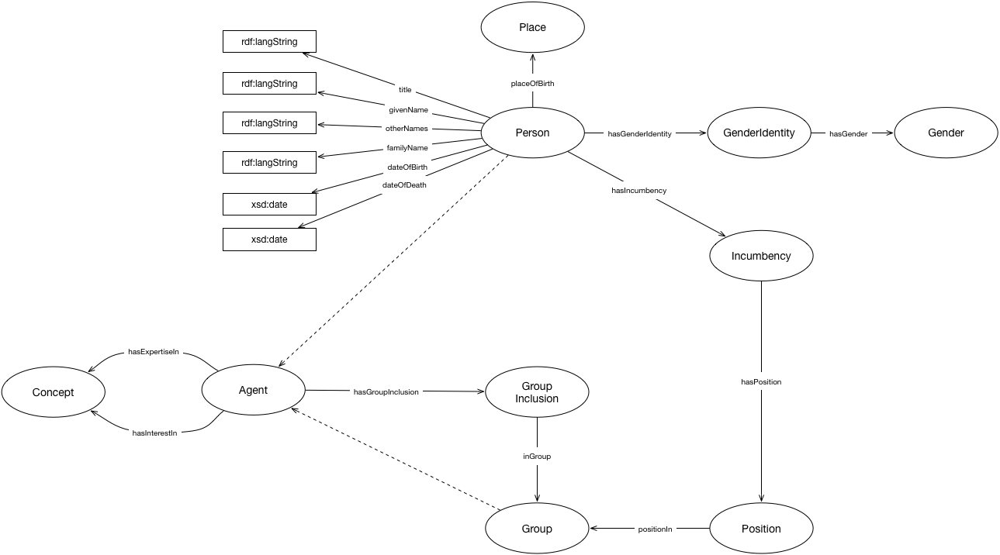

IRI: http://parliament.uk/ontologies/agency/Agent
IRI: http://parliament.uk/ontologies/agency/Concept
IRI: http://parliament.uk/ontologies/agency/Gender
IRI: http://parliament.uk/ontologies/agency/GenderIdentity
IRI: http://parliament.uk/ontologies/agency/Group
IRI: http://parliament.uk/ontologies/agency/GroupInclusion
IRI: http://parliament.uk/ontologies/agency/Incumbency
IRI: http://parliament.uk/ontologies/agency/Person
IRI: http://parliament.uk/ontologies/agency/Place
IRI: http://parliament.uk/ontologies/agency/Position
IRI: http://parliament.uk/ontologies/agency/familyName
IRI: http://parliament.uk/ontologies/agency/givenName
IRI: http://parliament.uk/ontologies/agency/hasGroupInclusion
IRI: http://parliament.uk/ontologies/agency/hasExpertiseIn
IRI: http://parliament.uk/ontologies/agency/hasGender
IRI: http://parliament.uk/ontologies/agency/hasGenderIdentity
IRI: http://parliament.uk/ontologies/agency/hasIncumbency
IRI: http://parliament.uk/ontologies/agency/hasInterestIn
IRI: http://parliament.uk/ontologies/agency/hasPosition
IRI: http://parliament.uk/ontologies/agency/inGroup
IRI: http://parliament.uk/ontologies/agency/otherNames
IRI: http://parliament.uk/ontologies/agency/placeOfBirth
IRI: http://parliament.uk/ontologies/agency/positionIn
IRI: http://parliament.uk/ontologies/agency/title
IRI: http://parliament.uk/ontologies/agency/dateOfBirth
IRI: http://parliament.uk/ontologies/agency/dateOfDeath
IRI: http://parliament.uk/ontologies/agency/familyName
IRI: http://parliament.uk/ontologies/agency/givenName
IRI: http://parliament.uk/ontologies/agency/otherNames
IRI: http://parliament.uk/ontologies/agency/title
This HTML document was obtained by processing the OWL ontology source code through LODE, Live OWL Documentation Environment, developed by Silvio Peroni.